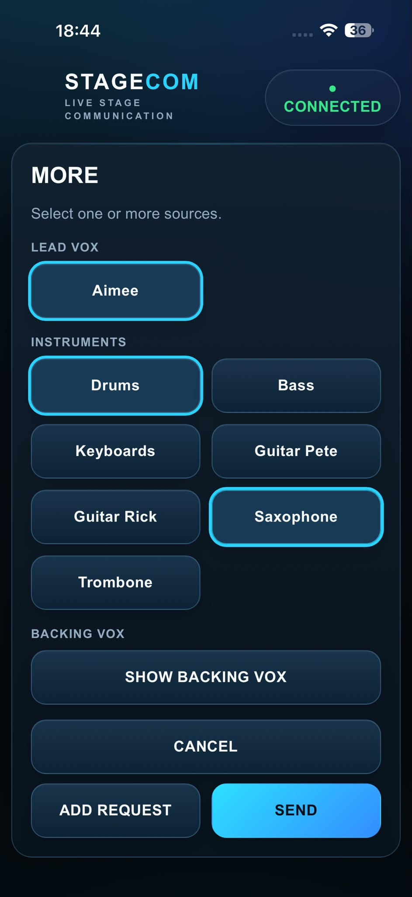
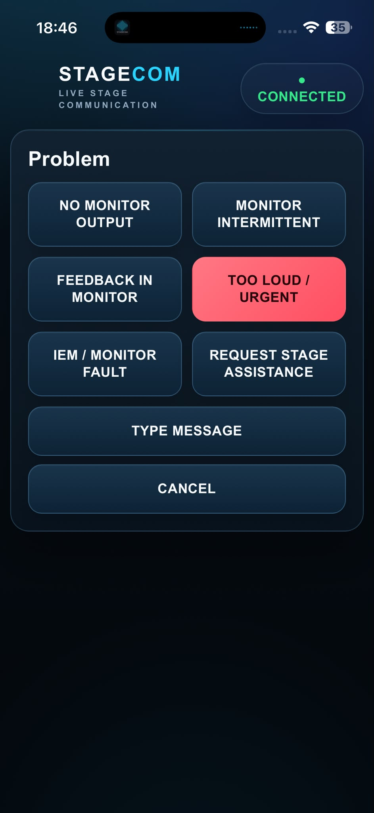
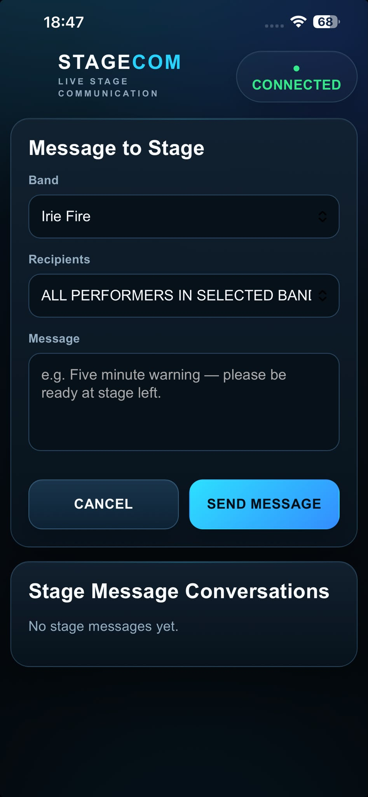

Connect & scan
Join the StageCom Wi-Fi, scan the QR code and open StageCom in your normal browser.
LOCAL LIVE-STAGE COMMUNICATIONS
Send monitor requests and stage messages straight to the engineer. Performers join in their browser, with no app to install and no internet or mobile signal needed during the show.
ACTUAL ALPHA INTERFACES
INSIDE STAGECOM
Actual screenshots from the alpha build: performer requests, source selection, engineer responses and stage messaging.
More, less, can’t hear, problem reporting and messages in one place.
Open full-size screenshot
Choose the sources you need and add adjustments to a request.
Open full-size screenshotRead incoming requests, acknowledge them and respond from the engineer interface.
Open full-size screenshot
Flag monitor problems, request stage assistance or add a message.
Open full-size screenshot
Select a band and recipients, then send a stage message.
Open full-size screenshotThe current opening screen from the development build.
Open full-size screenshotActual alpha screenshots supplied by the developer. Interfaces may change as development continues. Names and band configurations shown are part of the captured setup, not endorsements.
BUILT AROUND THE PEOPLE MAKING THE SHOW
Performers · Monitor & FOH engineers · Stage managers · Production teams · Venues · Festivals
WHEN THE SHOW IS ALREADY HAPPENING
You need more keys, less trombone and much more backing vocals. The engineer is across the stage. You need to know the message landed—and when it has been dealt with.
StageCom gives that exchange a clear path: request, acknowledgement, completion. With two-way messaging when you need to say more.
FROM JOINING TO JOB DONE
The Android host runs the system on a dedicated local Wi-Fi network. Performers bring their existing phone or tablet.
Join the StageCom Wi-Fi, scan the QR code and open StageCom in your normal browser.
Select yourself and send the adjustments or message you need. Combine several changes in one request.
The engineer receives the request and acknowledges it. The performer sees the status change live.
The engineer marks the request completed. The performer sees the outcome while the show carries on.
NO APP FOR PERFORMERS
iPhone, Android phone, iPad or Android tablet: performers use a suitable modern browser. No app-store visit or app maintenance for every artist.
The host/server runs on Android. An iOS host application is not currently available.
LOCAL WI-FI. NO INTERNET DEPENDENCY.
A dedicated router provides the local network. Normal show operation does not depend on internet access, mobile reception or venue Wi-Fi.
From festival fields to basements and busy venues: devices still need to be connected to the StageCom Wi-Fi and within its coverage.
REQUESTS THAT MAKE SENSE ON STAGE
Combine adjustments in one request. Configure performers and sources for each band, rather than working around a fixed instrument list.
Ask for a source to come up.
Ask for a source to come down.
Make the missing source clear.
Flag an issue to production.
Two-way stage messaging adds the context. Ask a question, send a free-text message or confirm that the change helped.
Thanks, that’s much better.
Good to hear. Have a great set.
ILLUSTRATIVE MESSAGE EXCHANGE
THE ENGINEER WORKFLOW
Incoming requests, request details and history give the engineer a clear communication workflow. Acknowledgement and completion keep the performer informed without another shout across the stage.
A purpose-built communication layer alongside the production workflow. Audio adjustments are made by the engineer using the existing mixing system.
Try the workflow conceptOne request. Multiple adjustments.
Send the example request from the performer view to see the engineer workflow.
More keys
Less trombone
A lot more backing vox
Illustrative interfaces and example content, not product screenshots. Try the request → acknowledgement → completion flow below. No message is sent.
ONE BAND TO THE NEXT
Manage multiple band configurations on the host. Make one band LIVE for active communication, while other bands remain suspended until needed.
Use stage messaging to help upcoming acts prepare or load onto stage. Keep the current band’s requests focused on the performance happening now.
ILLUSTRATIVE BAND CONTROL
Example names and statuses. Band configurations are defined by the user.
DEVELOPMENT IN THE REAL WORLD
StageCom has already been used successfully during a live performance. A monitor request was read, acted on, acknowledged and completed, with the status updating on the performer’s screen while the performance continued.
A development experience reported by the founder. No venue or third-party endorsement is implied.
THE PRACTICAL QUESTIONS
No internet or mobile signal is required during normal show operation. StageCom uses a dedicated local Wi-Fi network. The host and client devices still need a working connection to that local network.
No. Performers connect to the StageCom Wi-Fi, scan a QR code and use a suitable modern browser on their phone or tablet. They then identify or select themselves in the interface.
The current host/server platform is Android, such as an Android tablet. Performer clients are browser-based and can use iPhone, Android, iPad and other suitable devices. An iOS host app is not currently available.
A dedicated router can provide the local Wi-Fi network. Plan coverage for the performance area and connect the host and performer devices to that network. Detailed setup guidance will form part of controlled external testing.
Yes. The host manages multiple band configurations, with one band made LIVE for active communication. Other bands can remain suspended until needed. Stage messaging can also help coordinate upcoming acts.
StageCom communicates what the performer needs. The engineer makes the audio adjustment through the existing mixing system, then acknowledges and completes the request in StageCom.
The system operates on a dedicated local network. Detailed access controls, router configuration and security guidance need to be confirmed as part of the testing process; we are not making encryption or isolation guarantees here.
StageCom is in alpha, preparing for controlled external engineer testing. The likely initial distribution route is a Google Play internal or closed test for the Android host. Public release dates and pricing have not been announced.
HELP SHAPE THE NEXT STAGE
We’re preparing for controlled external testing. If you’re an engineer, venue or production team interested in trying StageCom, tell us about your setup and the shows you work on.
An enquiry starts a conversation. Access and testing arrangements are agreed individually.